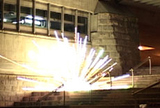

|
12 EXPLOSIONS
12 EXPLOSIONEN
Johann Lurf | Austria 2008 | 6 min.
Material: DV
Format: Beta SP
Original language: no dialogues
Camera: Mark Gerstorfer, Andi Winter, Lorenzo Wasner
Sound: Christian Otto, Dominik Schlager & Alexander
Zlamal
Editing: Johann Lurf
Production: Johann Lurf
Print/Sales: Sixpack Films
www.filmvideo.at
Twelve times, Johann Lurf sets off fireworks in the nocturnal streets of Vienna: cheerful images without words, a cinematic outline without beginning or end, entirely left to the passage of time and its fears, moments of happiness and outbursts - for the film to end up one day at a flea market and be discovered as anonymous found footage of an explosive time.
"12 EXPLOSIONS is a fine little study of perception by a filmmaker with a sense of humor who simply wanted to try out what interests him about cinema. Precisely crafted, and nothing like it has been seen before: This is what experimental film should be like." - Maya McKechneay
Johann Lurf , born in 1982 in Austria. Since 2002 he has studied painting at Vienna's Academy of Fine Arts. He is a filmmaker of shorts and part-time projectionist.
Films : Without Title 2003 | Pan 2005 | Vertigo Rush 2007 | 12 Explosions 2008
back
|